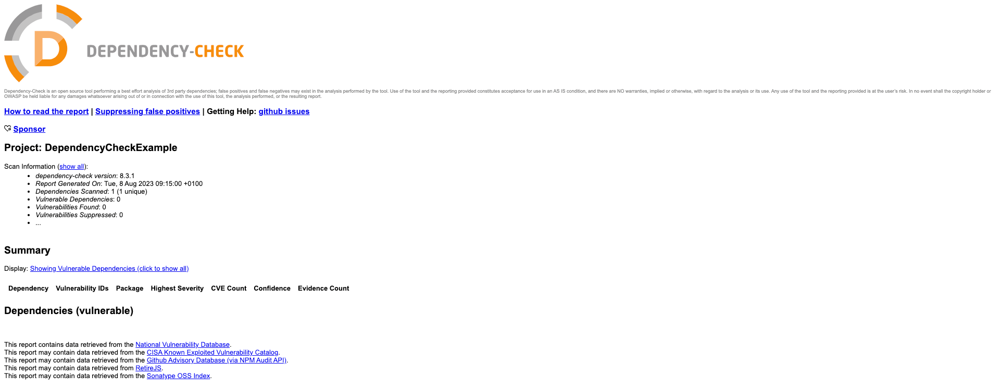
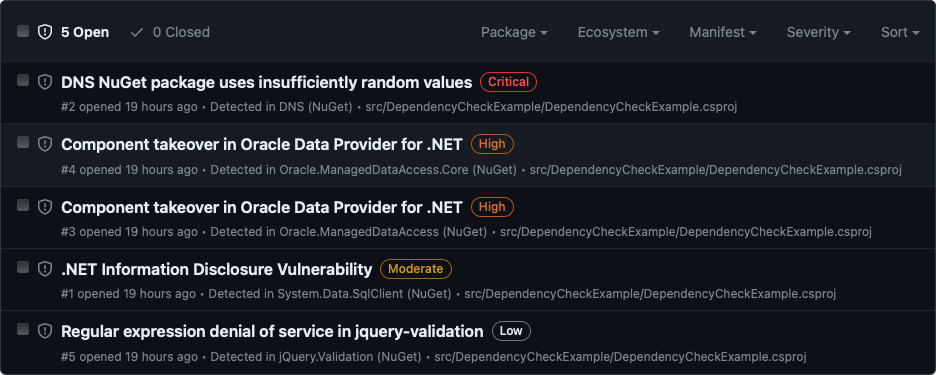

In this article I will run through setting up the awesome DependencyCheck from Jeremy Long for a .NET application.
Dependency-check can currently be used to scan software to identify the use of known vulnerable components.
I've used this on some Kotlin/Java projects and wanted to see how easy it was to setup for .NET.
There are a number of plugins listed for Gradle etc but for .NET I'm going to use the CLI.
You can run this locally, first install with brew install dependency-check then for *nix systems run dependency-check.sh --project "My App Name" --scan "/java/application/lib".
Since I'm wanting to also try this out in CI/CD it's straight to GitHub to create a sample repo.
I created a simple .NET Console Application then looked at what was needed to run the tooling locally.
dependency-check --project "DependencyCheckExample" --scan "src/DependencyCheckExample/bin/Debug/net7.0/*.dll"
[NOTE] Update the
net7.0version to whichever you are working with.
Depending where you are running the tool from determines the output location of the report. See the Command Line Agruments for more details.
| Short | Argument Name | Parameter | Description | Requirement |
|---|---|---|---|---|
-o |
--out |
<path> |
The folder to write reports to. This defaults to the current directory. If the format is not set to ALL one could specify a specific file name. | Optional |
Make sure you are in the working directory of your project before running, unless you want it adding to your usr folder.
I also updated it to output to a subfolder of reports.
dependency-check --project "DependencyCheckExample" --scan "DependencyCheckExample/bin/Debug/net7.0/*.dll" --out "reports"
This produces a dependency-check-report.html file, self contained with the results.

Not very interesting as there are no dependencies, but at least the flow is working.
Next is how to replicate this in GitHub Actions?
Could I run brew install and run dependency-check.sh, maybe but I'm sure someone has already created a GitHub Action for this.
- name: Depcheck
uses: dependency-check/Dependency-Check_Action@main
id: Depcheck
with:
project: 'test'
path: '.'
format: 'HTML'
out: 'reports' # this is the default, no need to specify unless you wish to override it
args: >
--failOnCVSS 7
--enableRetired
This has a lot of options to override so check the docs if you want to tweak anything.
There's an ADO one too (azuredevops).
I created a Workflow (depcheck.yml) to get the src, restore any dependencies, build, (test) and then run the Dependency-Check action.
We now have an artifact so might as well upload that and since it's a website we can use GitHub Pages to host the output too.
I manually created an index.html on the gh-pages branch to point to the file, you could do with this how you wish.
I've used JamesIves/github-pages-deploy-action but you could swap to peaceiris/actions-gh-pages or even the GH one through the new Beta options which includes actions/configure-pages, actions/upload-pages-artifact and actions/deploy-pages.
Next up is adding some vulnerable code to the sample Console App to see what DC finds...
Vulnerabilities
First thing to do is find some...
I could take a look through the CVEs on https://cve.mitre.org but it would help to know the CVE #. Another option is to filter the GitHub Advisory Database for NuGet.
I can then filter by Severity to get an example of each kind.
- 🟥 Critical - CVE-2021-4248 - DNS NuGet package uses insufficiently random values (DNS (6.1.0))
- 🟧 High - CVE-2023-21893 - Component takeover in Oracle Data Provider for .NET (Oracle.ManagedDataAccess (21.4.0) / Oracle.ManagedDataAccess.Core (3.21.1))
- 🟨 Moderate - CVE-2022-41064 - .NET Information Disclosure Vulnerability (System.Data.SqlClient (4.8.3))
- ⬜️ Low - CVE-2021-43306 - Regular expression denial of service in jquery-validation (jQuery.Validation (1.19.3))
Add these to my .csproj, rebuild and then re-run the DC tool.

Comparing this to GitHub's check you can also see the same list from the Security tab (Dependabot):

Suppressions
As with everything we want a way to ignore things, these being false positive vulnerabilities or ones we've chosen to ignore for whatever reason. There is an option to do this with a supplementary file.
Create a new xml file, e.g. dependency-suppression.xml and add the following:
<?xml version="1.0" encoding="UTF-8"?>
<suppressions xmlns="https://jeremylong.github.io/DependencyCheck/dependency-suppression.1.3.xsd">
</suppressions>
Then in the Dependency Check Report there is a suppress button containing the XML you need to add, click, copy and add e.g.
<suppress>
<notes><![CDATA[
file name: Microsoft.Win32.SystemEvents.dll
]]></notes>
<packageUrl regex="true">^pkg:generic/Microsoft\.Win32\.SystemEvents@.*$</packageUrl>
<cpe>cpe:/a:microsoft:.net_core</cpe>
</suppress>
Re-run the report and this will have gone.
Fail
From the sample there was an added arg of failOnCVSS set to 7 so this was failing the CI/CD, as expected:
Error:
One or more dependencies were identified with vulnerabilities that have a CVSS score greater than or equal to '7.0':
DependencyCheckExample.csproj: CVE-2021-4248(9.8)
DependencyCheckExample.csproj: CVE-2023-21893(7.5)
DependencyCheckExample.csproj: CVE-2023-21893(7.5)
Removing this didn't stop the build failing and I couldn't see a default value in the code. Looking at the check CliParser - getFailOnCVSS I found it defaulted to 11 so just overrode it for the time being as I wanted the build to pass and produce the report - in a real world situation it would be good to set this to the required limit.
args: >
--failOnCVSS 11
| Short | Argument Name | Parameter | Description | Requirement |
|---|---|---|---|---|
--failOnCVSS |
<score> |
If the score set between 0 and 10 the exit code from dependency-check will indicate if a vulnerability with a CVSS score equal to or higher was identified. | Optional |
Inconsistencies
Running the app locally doesn't produce the same output as on GitHub Actions...
dependency-check --v
Dependency-Check Core version 8.3.1
The Dependency-Check Action uses the DependencyCheck Builder which has a Dockerfile which uses the Docker Hub image which is currently the same version.
--enableRetired is being used in the GHA but I'm not locally.
I need to check if any other args are being set to a default value.